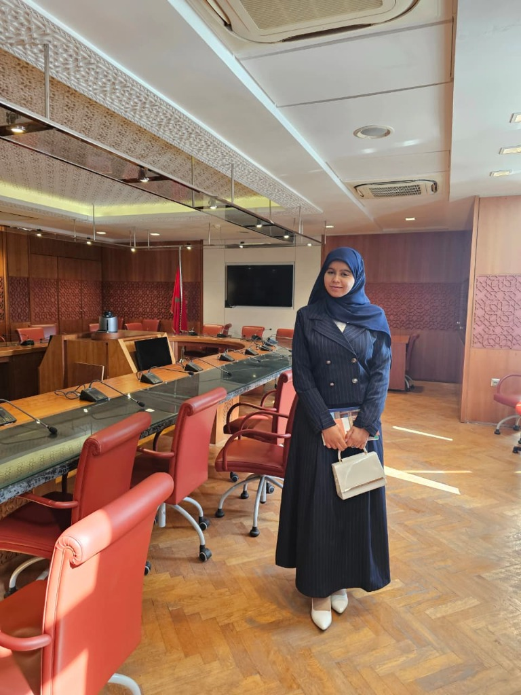

Finance publique
Contrôle, flux financiers, conformité, gestion des risques et évaluation des dossiers publics.
Candidate au Stage au Parlement
Actions Publiques, Ingénierie Financière & Modernisation Digitale
Étudiante en Master Management des Actions Publiques et Ingénierie Financière Publique à l’UM5-FSJES Agdal. Je combine compétences en finance publique, analyse des politiques publiques, communication institutionnelle et innovation digitale pour contribuer à des projets publics plus efficaces, transparents et orientés impact.

Profil
Étudiante en Master Management des Actions Publiques et Ingénierie Financier Publique, je mets en synergie mes compétences en finance publique, évaluation des politiques publiques, management, communication institutionnelle et innovation digitale. Mon objectif est d’apporter une lecture stratégique des enjeux publics et de contribuer à la modernisation des processus institutionnels.
Mon parcours, à la fois académique et professionnel, m’a permis de développer une compréhension concrète des mécanismes de gestion publique, des risques réglementaires et de la transformation numérique. Je souhaite participer aux travaux administratifs et législatifs du Parlement du Royaume du Maroc afin de soutenir des décisions publiques plus efficaces, plus transparentes et plus centrées sur le citoyen.
Contrôle, flux financiers, conformité, gestion des risques et évaluation des dossiers publics.
Évaluation des politiques, performance administrative, gouvernance et modernisation des services.
Projets IA, outils digitaux, communication institutionnelle et solutions orientées impact citoyen.
Expériences
Formation
UM5 - FSJES Agdal, Rabat
Finances publiques, droit parlementaire, évaluation des politiques publiques, contrôle de gestion public.UM5 - FSJES Souissi, Rabat
Stratégie marketing, transformation digitale, gestion de projet, CMS et community management.Engagement
Compétences
Certifications
GOLDEV
Meta
Semrush
UNICEF Maroc
Contact
Je suis ouverte aux opportunités de stage, d’apprentissage, de collaboration ou de mission dans les domaines de la gouvernance publique, de la finance publique, de la communication institutionnelle et des solutions numériques à impact.